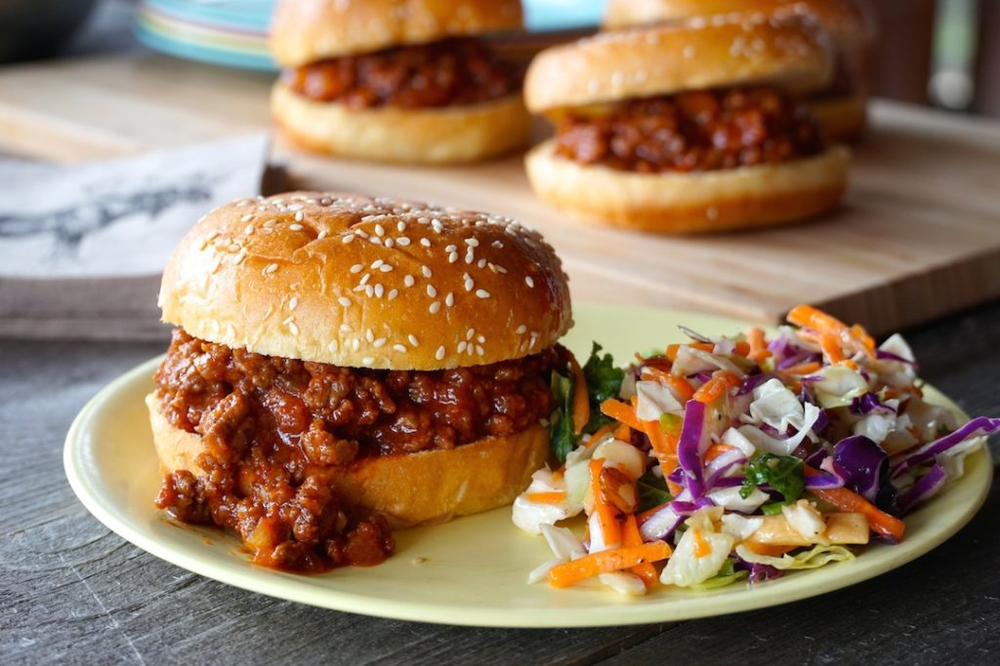

Sloppy Joe is an all-American, simple sandwich consisting of ground beef, onions, seasonings, and tomato sauce or ketchup on a hamburger bun. The sandwich probably started as a variation of the "loose meat" sandwiches that didn't contain tomato sauce. The sandwich is extremely popular with children and is a staple at school cafeterias throughout the United States, but it is also a favorite of parents since it is cheap and very easy to prepare.
Meal prep time : 30 minutes
Servings : 4